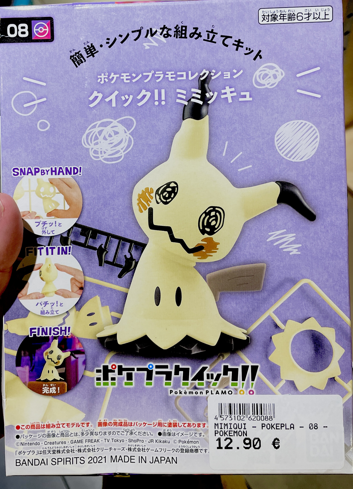
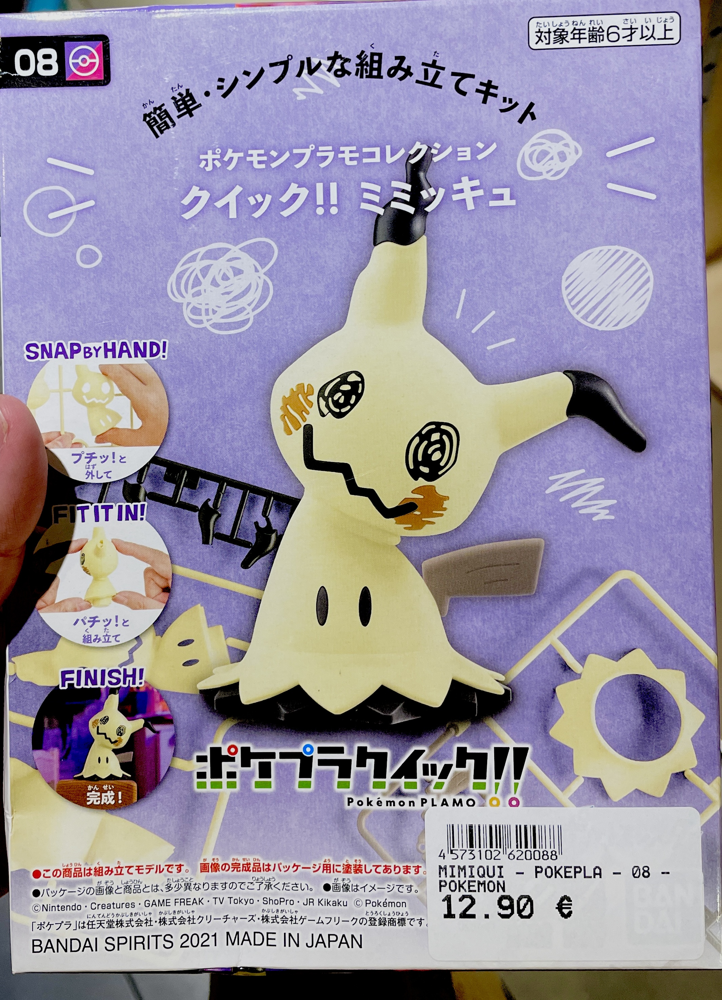
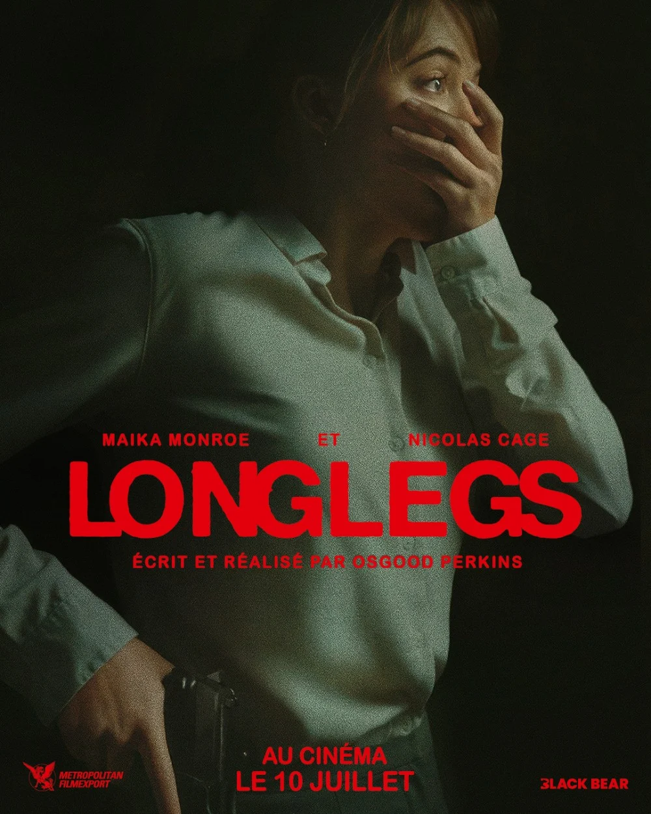
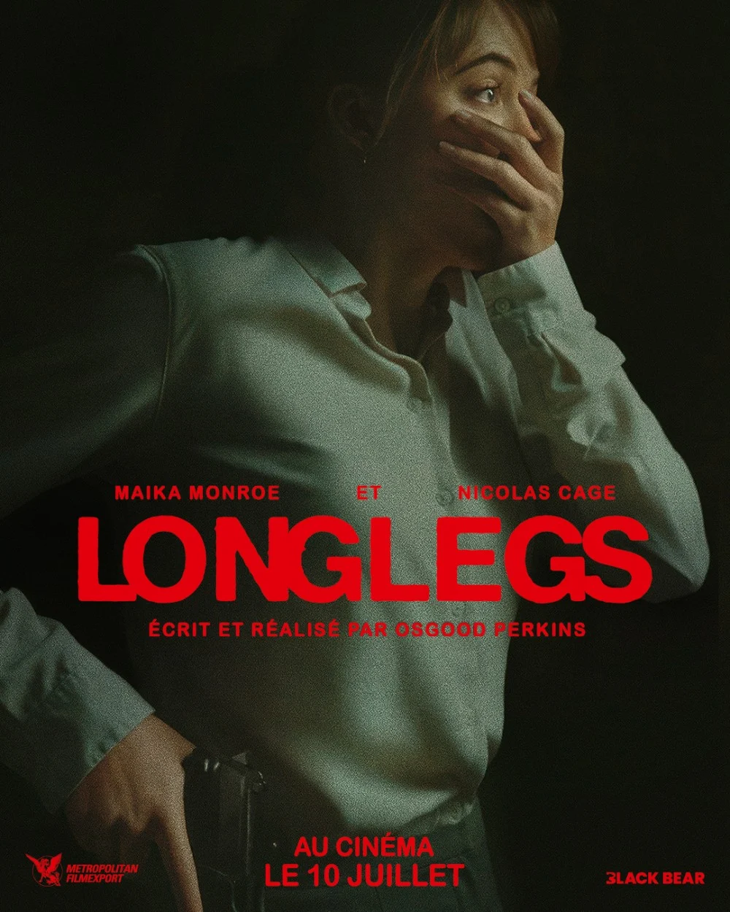

Portfolio de Dodoparipope

SKENDERI Joel
Apprenant dev web, futur grande star de la pop et grand fan de Gunpla
Etudes et Expériences
- J'ai eu un parcours assez mouvementé, je n'ai jamais été grand fan du système d'éducation classique, j'ai donc fait des études dans un lycée professionnel en Gestion Administration où j'ai obtenu mon baccalauréat professionnel
- Suite à mon baccalauréat ne sachant pas où me diriger j'ai opté pour une faculté de droit à Lyon 2 en suivant les pas de ma soeur, j'y suis resté pendant 3 ans. Ne souhaitant plus suivre d'études classiques j'ai décidé de prendre une année de refléxion.
- Suivant ma pause d'études j'ai eu l'option de faire un Service Civique que j'ai accepté, j'ai donc effectué ma mission à France Travail (anciennement Pôle Emploi) pendant 8 mois j'ai aidé les demandeurs d'emploi pour les démarches administrivement qu'elle soit physique ou numériques.
Projets
- Mon projet est de devenir developpeur web ce qui me donne le plus envie c'est de developper mon propre jeux vidéo que je fasse absolument tout de la direction artistique à la programation
- Pour y arriver j'ai décidé de rejoindre le programme La Toile de l'EM Lyon et je compte bien continuer d'enrichir mes talents de developpeur web au-dela de la formation que ce soit en autodidacte ou en alternance
- Mes premiers et seuls projets sont ce portfolio, et une page de présentation d'un personnage ce n'est que le début et j'ai l'envie de faire beaucoup plus.
-
 Lien vers mon premier site :
Lien vers mon premier site :
Mes hobbies et passions
Dans cette première partie je tiens à parler de moi et ce qui m'as donné envie de devenir développeur web
- Depuis que je suis tout petit j'ai eu la chance d'avoir accès à une console de jeux vidéo mes souvenirs les plus clairs commences avec la Playstation 2, je me souvenais que j'avais déjà des jeux avant d'en demander directement à mes parents, ce qui est très étrange car eux ne sont pas fan de ça et ont toujours été assez récalcitrant à l'idée de m'en acheter.
-
Mon premier souvenir concret de jeux vidéo étant moi jouant à Ratchet & Clank : Gladiator (connu sous le nom de Deadlocked en Amérique du Nord)

 En ce moment je suis absolument ensorcelé par Alan Wake 2 et l'univers connecté Remedy, comprennant les jeux Alan Wake 1 et 2, Control, FBC Firebreak, Max Payne et Quantum Break (bien que pas encore officialisé pour ce dernier).
depuis que j'ai commencer à jouer j'ai toujours aimer la science fiction c'est à ce jour toujours mon type de fiction préférée, qu'elle soit un média d'action, de comédie ou d'horreur.
En ce moment je suis absolument ensorcelé par Alan Wake 2 et l'univers connecté Remedy, comprennant les jeux Alan Wake 1 et 2, Control, FBC Firebreak, Max Payne et Quantum Break (bien que pas encore officialisé pour ce dernier).
depuis que j'ai commencer à jouer j'ai toujours aimer la science fiction c'est à ce jour toujours mon type de fiction préférée, qu'elle soit un média d'action, de comédie ou d'horreur.
-
Les Plastic Models
- En continuant dans le monde de la science fiction, c'est beaucoup plus récemment que j'ai découvert ma passion pour les plastic models, des figurines et/ou décors à construire sois-même, le type de figurines les plus connues sont les Gundam Plastic Model, couramment appelé Gunpla, évidemment les plastic models sont bien plus que les figurines de robots Gundam et plein d'autre variantes ont vu le jour.
-
Le Cinéma (d'Horreur principalement)
- Sortant un peu de la pop culture Sci-Fi j'ai toujours regardé des films d'horreur depuis que je suis petit, à l'égard de mes parents. C'est aussi à mon adolescence que j'ai commencer à élargir ma culture horreur et que j'ai commencer a regarder des films classique comme indépendant. The Thing est un de mes films préférés tout simplement, récemment je me suis pris d'une obsession pour Longlegs que je trouve artistiquement magnifique.
Les Jeux Vidéo
 

 

Depuis que je suis petit je m'interesse au processus créatif d'une oeuvre ou d'un objet, c'est de la que viens ma passion pour le developpement web, j'ai toujours voulu faire fonctionner quelque chose que j'ai moi-même. que ce soit pour un jeux une maquette ou un film je m'intéresse à comment celui-ci fonctionne et qu'elle sont les idées utilisées pour le faire fonction